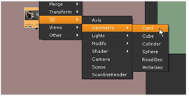
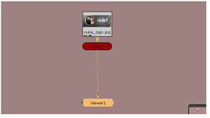
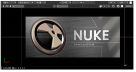
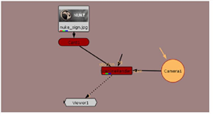
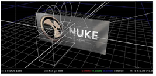
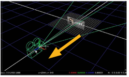
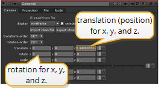
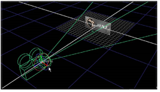
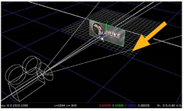
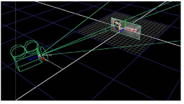

Let’s start with the basics. In this first example, you’ll create a basic 3D node tree, map an image to a 3D card, manipulate it, and then render the result back out to the 2D composite.
| 1. | In the “3Dinteg_tutor.nk” project file, locate the backdrop node labeled “Setting Up a 3D System.” You’ll see a Read node with the image you’ll use for this example. |
| 2. | Right-click over the nuke_sign.jpg node, and choose 3D > Geometry > Card. |

This attaches a “Card1” node. Let’s see what it looks like in 3D.

| 3. | Attach a Viewer to the Card1 node and Nuke switches the Viewer to 3D. |
Wow, that’s amazing. It looks exactly like the 2D Viewer. How can anyone tell the difference? Check the lower-left corner of the Viewer and you’ll see an orientation marker for the three axes in 3D. You’ll also see that “3D” is displayed on the view dropdown menu.
That sign is a little darker than expected, isn’t it? Actually, you can’t see the image yet because the default view of the 3D workspace is at the origin or center of the space. Perhaps zooming-out may improve the view.
| 4. | Press the Alt key (Windows /Linux) or the Option key (OS X), and drag with the middle mouse button to zoom or “dolly.” Drag to the left and you’ll zoom out. |

Hey, look. There’s the Nuke emblem. In the 3D Viewer, the “pan” and “zoom” controls are exactly the same as what you’ve used for the node tree and the 2D Viewer, but let’s try “tumbling” to get a better view.
| 5. | Alt- or Option-drag with the right mouse button to rotate around the origin point of the 3D workspace. You now see the 3D grid and the image mapped to the card. |

When an image is connected directly to a Card node like this, it is applied as a flat or “planar” map. The size of the card adjusts to the dimensions of the image.
| 6. | Click on the card and you select the node in the node tree and also the card inside the 3D workspace. |
| 7. | Use the mouse (and the Alt key) to navigate through the workspace. Go ahead, pan, dolly, and rotate at will. Then, press F over the Viewer to frame the 3D view. |
TIP: If you don’t like the standard navigation controls, open the Preferences control panel (Shift+S), select the Viewers tab and change the 3D control type to Maya, Lightwave, or Houdini.
| 8. | Click on an empty spot in the Node Graph to deselect all nodes. Let’s add the other nodes you need. |
| 9. | Right-click on the Node Graph and choose 3D > Camera. Keep its control panel open so you can manipulate the camera in the Viewer. |
| 10. | Right-click and choose 3D > ScanlineRender to insert a render node, and then connect the nodes as shown below. |

| 11. | Connect the Viewer to the ScanlineRender node, and you have the most basic 3D system in Nuke. |
| 12. | Press Tab over the Viewer to change to the 2D view. You won’t see the Nuke emblem - hey, where did it go? We saw it before. |
| 13. | Press Tab again to switch back to 3D. You’ll see the default camera position is too close to view the card. Let’s move things around to get an image for 2D. |

| 1. | Alt- or Option-drag with the middle mouse button to dolly out and show more of the 3D workspace. |
| 2. | Select the camera. You can do this by clicking the camera object in the Viewer or clicking the Camera1 node in the Node Graph. |
| 3. | Drag the transform handles to move the camera away from the card, along the z-axis. |

As you drag the camera, look at the camera’s control panel. You’ll see the x/y/z transform values reflect the camera’s current position.

| 4. | Press and hold Ctrl (Mac users press Command) over the Viewer and the transform handles change to rotation rings. |

| 5. | Drag the green ring to rotate the camera around the Y-axis. Notice the x/y/z rotation values in the control panel reflect the angle of the rotation. |
The blue handle “rolls” or rotates on the Z-axis, and the red handle rotates on X.
| 6. | Now, select the card object and move it away from the camera. |
Keep the control panel open for the Card node. As with the Camera node, the transform handles disappear from the Viewer when you close the control panel.
| 7. | Drag the card’s transform handles to position it in the 3D workspace. If you wish, press the Ctrl key (Mac users press Command) over the Viewer and rotate the card. |

| 8. | Press Tab over the Viewer to switch between the 2D and 3D views to see the image the ScanlineRender node produces. |

| 9. | Before you continue to the next example, close all the control panels that are currently open. |
In this example, it doesn’t matter where you move the camera or card. In reality, however, you often need to use specific values, which you can enter directly in the control panels.
You can also import camera data or animation curves - did you notice the import chan file button in the camera’s control panel? - and apply them to the objects in the workspace.
|
|